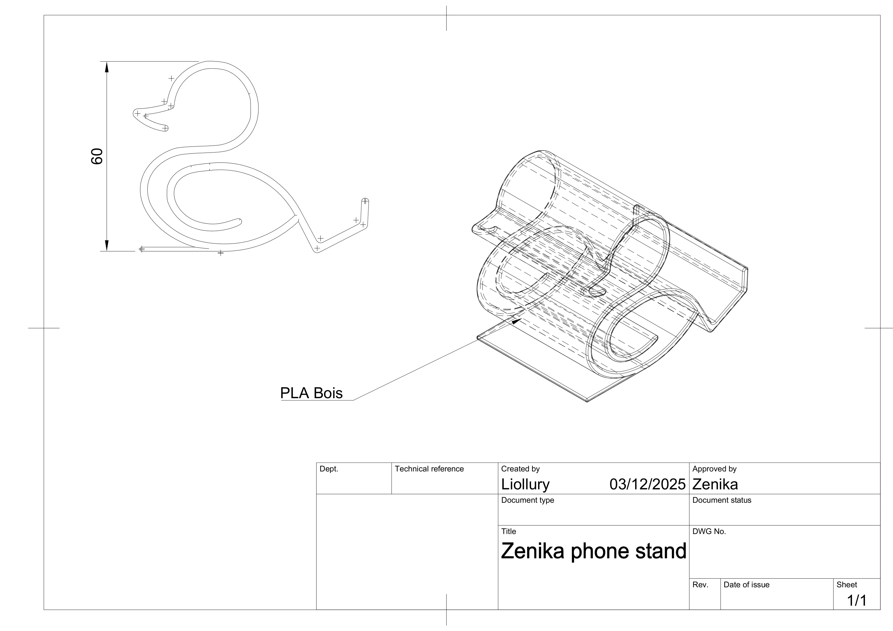

Modélisation sous Fusion 360
Le support est sculpté comme un ruban qui se replie, avec un angle confortable pour la lecture et un appui stable pour le téléphone.
Chaque courbe a été designée avec Fusion 360 pour rappeler la silhouette du canard Zenika, tout en restant fonctionnelle.
